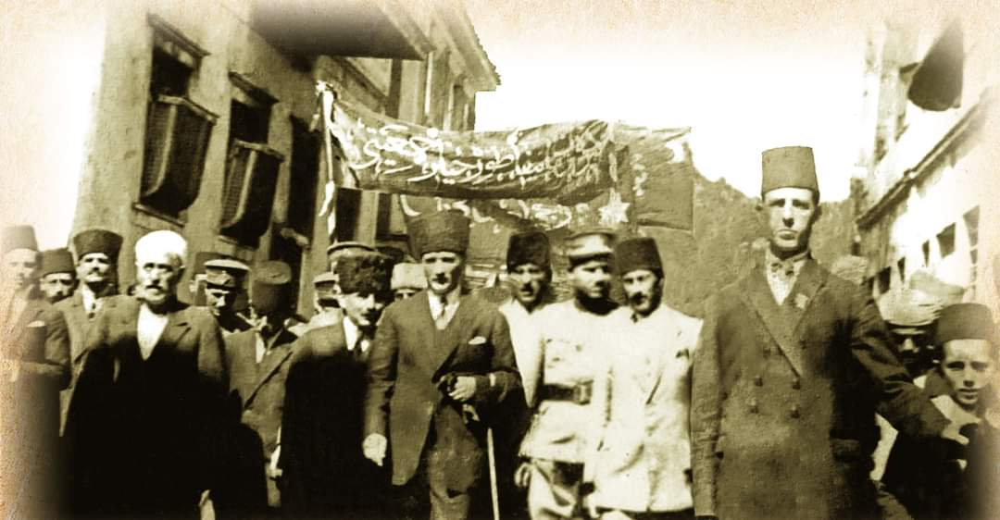
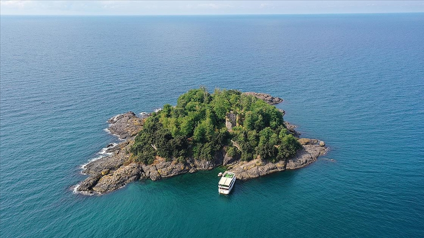
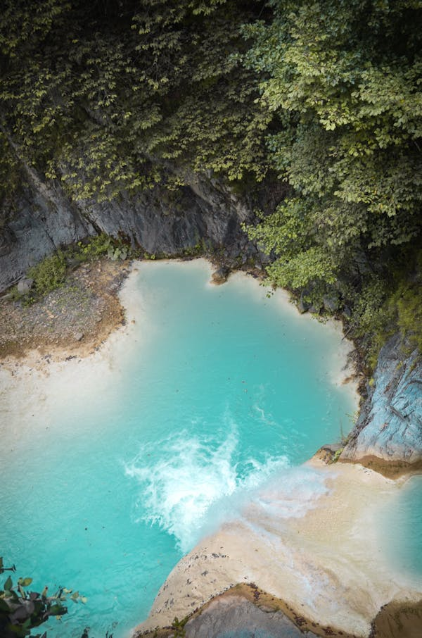
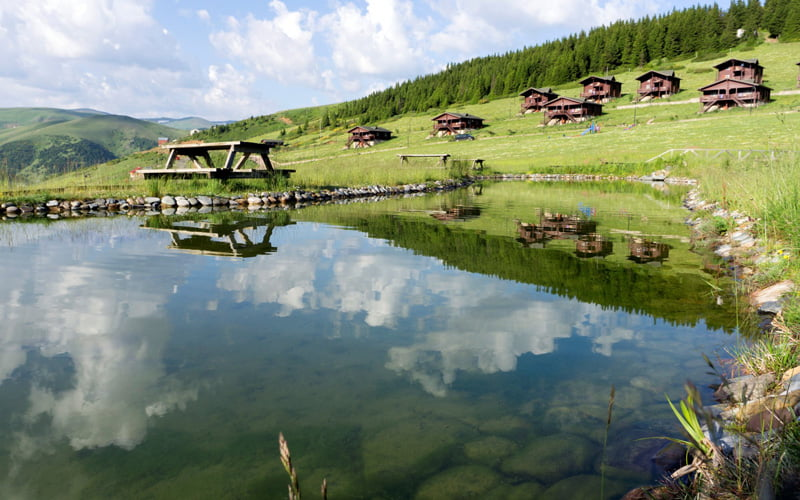
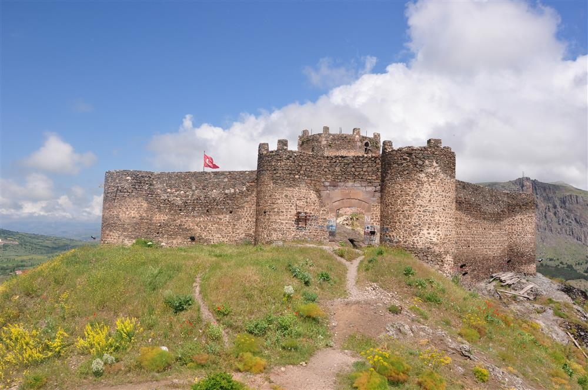
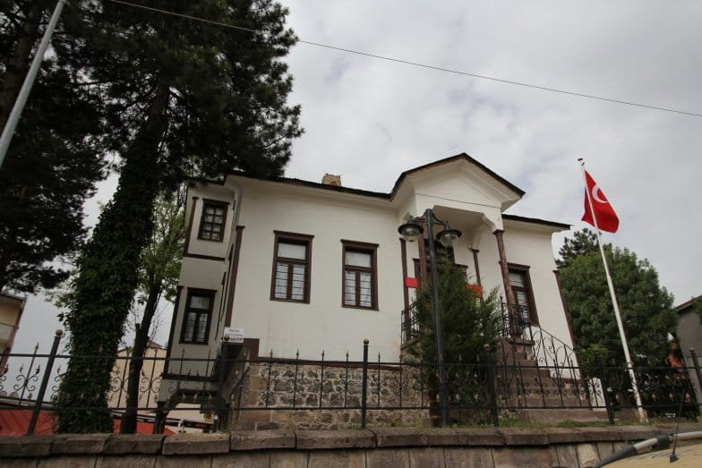
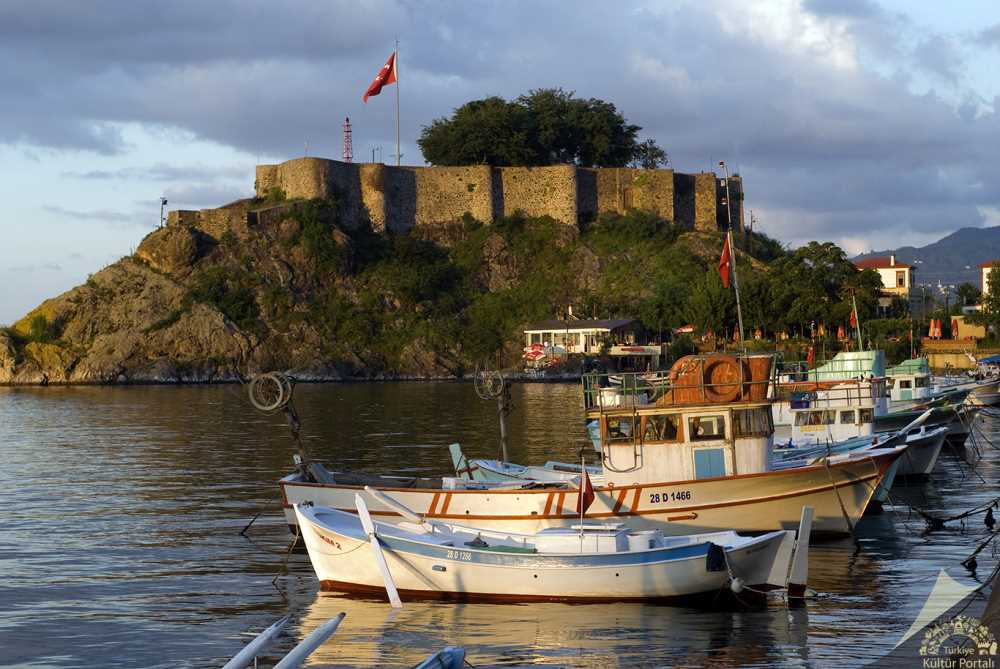

Giresun, Karadeniz’in incisi olarak bilinen, yeşilin ve mavinin kucaklaştığı eşsiz bir şehirdir.
Karadeniz'e kıyısı olan Giresun doğudan batıya Trabzon, Gümüşhane, Erzincan, Sivas ve Ordu illeriyle çevrilidir.
Tarihi ve kültürel zenginlikleriyle dikkat çeken Giresun, doğal güzellikleriyle de ziyaretçilerini büyüler.
Fındık üretimiyle ünlü olan şehir, aynı zamanda Türkiye'nin Karadeniz'deki tek adasına ev sahipliği yapmaktadır.
Kirazın bütün dünyaya buradan yayıldığı kabul edilir. Yerli halkın çoğunluğunu Çepniler oluşturur.
Giresun'un trafik numarası 28'dir.
Yaklaşık nüfusu 455.922 olarak kayıtlıdır.
Giresun, Antik Çağ’da bir Miletos kolonisi olarak kurulmuştur. Kerasus adıyla bilinen şehir, Romalı ve Bizanslı dönemlerde önemini korumuş, ancak bu dönemlere dair sınırlı bilgi günümüze ulaşmıştır. Coğrafyacı Strabon ve Romalı yönetici Arrien, şehrin geçmişine dair bilgiler vermiştir.
Türk tarihi açısından, Giresun'un kaderi 1397 yılında değişmiştir. Bayramlu Beyliği’nden Emir Süleyman Bey, Giresun’u fethederek bölgenin Türkleşmesini sağlamıştır. Giresun, bu tarihten itibaren Vilayet-i Çepni olarak anılmış, Çepni Türkmenleri bölgeye yerleştirilmiştir. İlginç bir şekilde, bu fetih Fatih Sultan Mehmet’ten (1461) çok daha önce gerçekleşmiştir; ancak tarih kitaplarında genellikle bu gerçek atlanır.
Giresun’un Osmanlı’ya katılması ise 1461 yılında, Fatih’in Trabzon seferiyle gerçekleşmiştir. 1920’ye kadar Trabzon’a bağlı kalan Giresun, bu tarihte sancak olmuş, 1923’te ise il statüsü kazanmıştır.
İlk yıllarda merkez, Tirebolu ve Görele ilçeleri ile bunlara bağlı bucaklardan oluşuyordu.
Tarih öncesi dönemlerde de Giresun çevresinde yerleşim izleri bulunmuştur. M.Ö. 2000’li yıllardan itibaren Türk varlığı (İskitler, Oğuzlar, Hunlar, Peçenekler, Hazarlar gibi) bölgede etkili olmuştur. Çevre mahalle adları ve halk ağzı da bu kültürel kökeni yansıtmaktadır.
Ayrıca Giresun’un karşısında yer alan Karadeniz’in tek adası olan Giresun Adası (Aretias), antik dönemde dini törenler ve kült merkezleriyle tanınır. Giresun, zengin tarihi, kültürel çeşitliliği ve doğasıyla Karadeniz’in önemli şehirlerinden biridir.
19 Eylül 1924
Atatürk'ün Giresun ziyareti Samsun’a doğru ilerlerken 19 Eylül 1924 tarihinde
yapılan bir ziyarettir. Atatürk Giresun ziyaretinde de her gittiği yerde
uyguladığı gibi, kendisini karşılamaya gelen halkı selamlamış, gençlerle
daha fazla ilgilenmiştir. Yine Belediye, Valilik, Bilgi
Yurdu, Vali Konağı gibi mekânları ziyaret ederek buralarda devlet erkânı,
memurlar, öğretmenler ve halkın maruzatlarını dinlemiş, anlık çözümler
önermiş, konu ile ilgili Vali Bey’e hemen talimat vermiştir. Bu ziyaret
esnasında kendisine, Millî mücadeledeki başarılarına övgüler dizen şiirini
okuyan Dr. Nejdet Bey’i dinlemiş ve bu konularda gençlere öğütlerde
bulunmuştur. Akşam Giresun’dan ayrılmış, Samsun’a doğru yola devam
etmiştir.

Atatürk'ün Giresun ziyareti
Doğal Güzellikleri

Giresun Adası
Giresun Adası, Karadeniz'in Türkiye kıyılarında yer alan tek adadır.Giresun Adası, Amazon kadınlarının savaş tanrısı Ares adına tapınak inşa ettikleri yer olarak bilinir.
Herkül'ün Altın Post'u aramak için geldiği efsanelere konu olan adada, surlar, manastır, kilise gibi tarihi yapılar bulunmaktadır.
Bu kalıntılar, adanın antik çağlardan itibaren yerleşim gördüğünü ve dini bir merkez
olduğunu göstermektedir.
Hem doğa tutkunları hem de tarih meraklıları için eşsiz bir destinasyondur.
Giresun şehir merkezinin 1,6 km açığında, yaklaşık 40.000 metrekarelik bir alana sahiptir.
Giresun Adası, Üçkayalar Balıkçı Barınağı'ndan kalkan teknelerle ziyaret edilebilir.
Hava koşullarına bağlı olarak, özellikle yaz aylarında düzenlenen turlarla ada gezilebilir.
Her yıl Mayıs ayında düzenlenen Aksu Festivali kapsamında, ada etrafında tekne turları düzenlenir
ve çeşitli ritüeller gerçekleştirilir.

Mavi Göl
Mavi Göl, Giresun'un Dereli ilçesinde, Kuzalan Tabiat Parkı sınırları içinde yer alan
ve Karadeniz Bölgesi'nde sodalı suyun dere şeklinde aktığı tek yer olma özelliğine
sahip eşsiz bir doğal güzelliktir. Göksu Deresi'nin sodalı suyu ve çevresindeki kireç
taşlarının etkileşimiyle özellikle yaz aylarında turkuaz bir renge bürünen Mavi Göl,
ziyaretçilerine görsel bir şölen sunar
Giresun şehir merkezine yaklaşık 45 km, Dereli ilçesine ise 13 km mesafede bulunmaktadır.
Alancık Köyü, Kuzalan Mahallesi sınırları içinde yer alan göle ulaşım oldukça kolaydır.
Gölde yüzmek yasak olsa da, çevresindeki yürüyüş parkurları ve seyir terasları
doğayla iç içe vakit geçirmek isteyenler için idealdir .

Kümbet Yaylası
Kümbet Yaylası, Giresun'un Dereli ilçesi sınırlarında,
şehir merkezine yaklaşık 60–65 km mesafede yer alan ve 1640 metre rakımıyla
Doğu Karadeniz'in en popüler yaylalarından biridir.
Rengarenk çiçeklerle kaplı bu yayla, temiz havası ve doğal dokusuyla huzur verir.
Doğal güzellikleri, zengin bitki örtüsü ve kültürel etkinlikleriyle hem yerli hem de yabancı turistlerin ilgisini çeker
Her yıl Temmuz ayının ikinci haftasında düzenlenen Kümbet Yayla Şenlikleri,
geleneksel müzik, halk oyunları ve yerel lezzetlerle renkli bir atmosfer sunar.
Konaklama imkânları ve doğa yürüyüş rotaları mevcuttur.
Tarihi Güzellikleri
Şehrin merkezinde yer alan kale, muhteşem manzarasıyla ziyaretçileri kendine hayran bırakır.
Giresun Kalesi
MÖ 2. yüzyılda Pontus Krallığı döneminde inşa edilmiştir.
18. yüzyıldan kalma kiliseden dönüştürülmüş müzedir.
Şebinkarahisar Kalesi

18. yüzyıldan kalma kiliseden dönüştürülmüş müzedir.
Atatürk Evi

18. yüzyıldan kalma kiliseden dönüştürülmüş müzedir.
Tirebolu Kalesi

Denize uzanan konumuyla tarihi bir savunma noktasıdır.
Neyi Meşhur?
Fındık
Türkiye'nin ve Dünya'nın fındık üretiminin kalbi Giresun'dur.
Yemyeşil fındık bahçeleri, şehrin ekonomisinin ve kültürünün temel taşıdır.
Karalahana Çorbası
Giresun mutfağının vazgeçilmez lezzeti, bolca tüketilen doyurucu ve vitamin deposu bir çorbadır.
Taze karalahana, mısır unu ve yerel baharatlarla hazırlanır.
Fasulye Diblesi
Giresun'a özgü bu fasulye yemeği, özel baharatlarla ve geniş bakır sahanlarda pişirilir.
Giresun'da her evde mutlaka pişen bu yemek köy düğünlerinin ve özel günlerin vazgeçilmezidir.
Isırgan Çorbası
Anadolu'nun şifalı otlarından ısırgan, Giresun'da lezzetli bir çorbaya dönüşür.
Bağışıklık güçlendiren bu çorba, genellikle yoğurt ve sarımsakla servis edilir.
Kiraz
Dünyaya buradan yayılan kiraz, Giresun'un simgelerinden biridir.
Mayıs-Haziran aylarında Kiraz Festivali ile şenlenen şehir, kırmızı ve sulu kirazlarıyla ünlüdür.